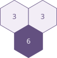

countingModel = {
const changes = new EventTarget();
const letters = "ABCDEFGHIJKLMNOPQRST";
let n = 3;
let m = 2;
function set(nextN, nextM) {
if (nextN === n && nextM === m) return;
n = nextN;
m = nextM;
changes.dispatchEvent(new Event("change"));
}
function populate(select, min, initial) {
for (let i = min; i <= 20; i++) select.add(new Option(i, i));
select.value = initial;
}
// BigInt keeps counts and page positions exact, even for 20^20.
function choose(n, k) {
if (k < 0 || k > n) return 0n;
k = Math.min(k, n - k);
let result = 1n;
for (let i = 1; i <= k; i++) {
result = result * BigInt(n - i + 1) / BigInt(i);
}
return result;
}
function ways(n, m, ordered, repeats) {
if (m === 0) return 1n;
if (n === 0 || (!repeats && m > n)) return 0n;
if (!ordered) return choose(repeats ? n + m - 1 : n, m);
if (repeats) return BigInt(n) ** BigInt(m);
let result = 1n;
for (let i = 0; i < m; i++) result *= BigInt(n - i);
return result;
}
const style = `
.count-demo {
color:#35424d; background:#fbfcfd; border:1px solid #d5dce1;
border-left:4px solid #79658e; border-radius:.5rem;
padding:1rem; margin:1rem 0;
}
.count-demo p { margin:.45rem 0; }
.count-demo .controls, .count-demo .bins, .count-demo .outcomes,
.count-demo .pager {
display:flex; flex-wrap:wrap; align-items:center;
gap:.45rem .8rem; margin:.7rem 0;
}
.count-demo button, .count-demo select {
font:inherit; color:inherit; background:white;
border:1px solid #bbc5cd; border-radius:.35rem; padding:.2rem .5rem;
}
.count-demo button:enabled { cursor:pointer; }
.count-demo button:disabled { opacity:.55; }
.count-demo :focus-visible { outline:2px solid #506c83; outline-offset:2px; }
.count-demo .bin { min-width:4.6rem; min-height:4rem; text-align:center; }
.count-demo .bin[aria-pressed="true"] { outline:2px solid #635080; }
.count-demo .stars {
display:block; color:#635080; max-width:9rem; overflow-wrap:anywhere;
}
.count-demo .outcomes { gap:.35rem; }
.count-demo .chip {
background:#ede9f3; color:#49395e; border-radius:.3rem;
padding:.2rem .5rem; font-family:monospace;
}
.count-demo .answer { font-weight:700; }
.count-demo [hidden] { display:none; }
`;
return {
get n() { return n; }, get m() { return m; },
set, changes, letters, populate, ways, style,
format: value => value.toLocaleString("en-US")
};
}Essential Combinatorics
“They call me the Count because I love to count things!” — Count von Count, Sesame Street
What counts as a different outcome?
Our answers depend on whether we care about the sequence in which we choose items (order) and whether we can choose the same item more than once (replacement). Order and replacement determine which of the four counting rules below applies when selecting \(m\) items from \(n\) distinct items.
| With Replacement | Without Replacement | |
|---|---|---|
| Order Matters | \(n^m\) | \(\displaystyle \frac{n!}{(n-m)!}\) |
| Order Does Not Matter | \(\displaystyle \binom{n-1+m}{m}=\frac{(n-1+m)!}{(n-1)!m!}\) | \(\displaystyle \binom{n}{m}=\frac{n!}{m!(n-m)!}\) |
Slots
A simple way to count outcomes is to picture a row of empty slots, one for each choice. Ask how many options you have for the first slot, then for the second, and so on. Replacement determines whether you can use an item again if it was used earlier. Order determines whether the slot order matters or arrangements like \(AB\) and \(BA\) count as two outcomes or one.

The Product Rule (or the Multiplication Rule) helps determine the total number of ways to fill our slots/number of total choices, if there are \(n\) ways to perform one action and \(m\) ways to perform a second independent action, then there are \[n(m)\] ways to perform both actions. This can be envisioned as simply filling two slots,
To fill these two slots we can further envision counting spots in a grid with the \(n\) options representing slot \(1\) along the horizontal axis and \(m\) options representing slot \(2\) along the vertical axis,
Theorem: The Generalized Product Rule [Thm 1.2, Rozanov]
Given \(n_1\) elements \(a_1,\ldots,a_{n_1}\) and \(n_2\) elements \(b_1,\ldots,b_{n_2}\) etc. up to \(n_r\) elements \(x_1,\ldots,x_{n_r}\) there are precisely \(n_1n_2\ldots n_r\) r-tuples \((a_{i_1},b_{i_2},\ldots,x_{i_r})\) containing one element of each kind
Factorials and Permutations
The product rule gives us a way to count choices slot by slot. Start with the case where order matters and we choose without replacement.
Theorem: Properties of Factorials and Permutations
Factorials and permutations satisfy several useful identities and approximations that simplify counting problems and connect combinatorics to probability theory,
Sequential permutation identity. Suppose we fill \(i\) slots and then fill another \(j\) slots, all without replacement. For nonnegative integers \(i,j\) with \(i+j\le n\),
\[ P(n,i+j)=P(n,i)\,P(n-i,j). \tag{2}\]
Derangements. A derangement is a permutation in which no item stays in its original position. Let \(D_n\) denote the number of derangements of \(n\) distinct items. If we choose \(i\) items to stay in place, the remaining \(n-i\) items can be arranged in \((n-i)!\) ways. Applying inclusion–exclusion gives \[ D_n =\sum_{i=0}^n(-1)^i\binom{n}{i}(n-i)! =n!\sum_{i=0}^n\frac{(-1)^i}{i!}. \tag{3}\]
If all \(n!\) permutations are equally likely, then \[ P(\text{no item stays in place}) =\frac{D_n}{n!} =\sum_{i=0}^n\frac{(-1)^i}{i!} \longrightarrow e^{-1}\approx 0.368. \] The limit follows from the power series for \(e^x\) evaluated at \(x=-1\).
Stirling’s approximation. For large \(n\), we can approximate \(n!\) by \[ n!\sim\sqrt{2\pi n}\left(\frac{n}{e}\right)^n, \qquad n\to\infty, \tag{4}\]
where \(\sim\) means the ratio of the two sides approaches \(1\). Taking logarithms gives \[ \log(n!)=n\log n-n+\tfrac12\log(2\pi n)+o(1), \] where \(o(1)\) is a term that approaches zero. This form is useful when factorials appear in a log-likelihood, as they do for the Poisson and multinomial distributions.
Combinations
Example: XKCD 3015, Dungeons and Dragons

If 5 of 10 arrows are cursed, the probability of selecting two uncursed arrows without replacement is
\[ P(\text{neither cursed}) =\frac{\binom{5}{2}}{\binom{10}{2}} =\frac{2}{9}\approx0.2222. \]
The dungeon master claims that rolling three six-sided dice and one four-sided die, using a total of at least 16 as the cutoff, gives the same probability of \(2/9\). Since the dice rolls are independent, there are \(6^3(4)=864\) equally likely outcomes. We can count the favorable outcomes using the following table:
| Four-sided die | Required sum of 3d6 | Favorable outcomes |
|---|---|---|
| 1 | \(\geq 15\) | 20 |
| 2 | \(\geq 14\) | 35 |
| 3 | \(\geq 13\) | 56 |
| 4 | \(\geq 12\) | 81 |
| Total | 192 |
Thus,
\[ P(\text{sum}\geq16)=\frac{192}{864}=\frac29. \]
and as always, the dungeon master is correct
Remark: Intuition on why we divide by \((n-m)!\) and \(m!\)
When computing the number of arrangements (or permutations) for \(m\) items out of \(n\) distinct items without replacement, a useful approach is to start by considering how many ways there are to arrange all \(n\) items. This total is \(n!\), but we are only interested in the order of the first \(m\) items.
Notice that in each complete ordering of \(n\) items, the last \((n-m)\) positions (positions \((m+1)\) through \(n\)) can be arranged in any order. There are exactly \((n-m)!\) ways to arrange these remaining items. In other words, if we view the first \(m\) items in a full ordering as our permutation of interest, then different orderings of the remaining \((n-m)\) items do not alter this selected permutation.
For example, suppose \(n=4\) and \(m=2\). The full orderings \([1,2,3,4]\) and \([1,2,4,3]\) both yield the same permutation \([1,2]\) when only the first two items are considered.
We can represent a full ordering as, \[ \underbrace{[x_1,\ldots,x_m}_{\text{Permutation of Interest}}, \underbrace{x_{m+1},\ldots,x_n}_{\text{Extra Portion}}]. \]
Since each distinct permutation of the \(m\) items appears \((n-m)!\) times in the \(n!\) full orderings, we divide \(n!\) by \((n-m)!\) to account for the repeated arrangements of the extra portion. This gives the number of unique permutations of \(m\) items from \(n\) items as \(\frac{n!}{(n-m)!}\) a similar argument yields the formula for combinations.
Remark: Pascal’s Triangle

Pascal’s triangle starts with a single \(1\). Each row begins and ends with \(1\), and each interior entry is the sum of the two entries immediately above it. Every row is symmetric from left to right.

The entry in row \(n\), position \(i\) is \(\binom{n}{i}\), the number of ways to choose \(i\) items from \(n\) distinct items.
Theorem: Properties of Combinations
Combinations, permutations, and factorials satisfy many useful identities that simplify counting problems. Many of these identities can be visualized with Pascal’s triangle above,
Symmetry of Combinations. \[\binom{n}{i}=\binom{n}{n-i}\] {#eq-symm},
Relationship between permutations and combinations. For \(0\le i\le n\), \[ P(n,i)=i!\binom{n}{i}=\frac{n!}{(n-i)!}. \tag{6}\]
Row sums. The entries in row \(n\) sum to \(2^n\). \[ \sum_{i=0}^n\binom{n}{i}=2^n. \tag{7}\]
Sum of squared combinations. The sum of the squares of the entries in row \(n\) equals the middle entry of row \(2n\). \[ \sum_{i=0}^n\binom{n}{i}^2=\binom{2n}{n}. \]
Square of a row sum. Squaring the sum of row \(n\) gives the sum of row \(2n\). \[ \left(\sum_{i=0}^n\binom{n}{i}\right)^2 =4^n =\sum_{k=0}^{2n}\binom{2n}{k}. \]
Addition identity (Pascal’s rule). Each interior entry is the sum of the two entries directly above it. For \(1\le i\le n-1\), \[ \binom{n}{i} =\binom{n-1}{i-1}+\binom{n-1}{i}. \tag{8}\]
Hockey-stick identity. For integers \(n\ge i\ge0\), \[ \sum_{j=i}^{n}\binom{j}{i}=\binom{n+1}{i+1}. \tag{9}\]
Vandermonde’s identity. For integers \(0\le i,m\le n\), \[ \binom{n}{i} =\sum_{j=0}^{i}\binom{m}{j}\binom{n-m}{i-j}. \tag{10}\]
Alternating row sums. For \(n\ge1\), the entries in even positions and the entries in odd positions have the same sum. Equivalently, \[ \sum_{i=0}^n(-1)^i\binom{n}{i}=0. \tag{11}\]
Binomial theorem. The entries of Pascal’s triangle are called binomial coefficients because they are the coefficients in the expansion of \((a+b)^n\). For every nonnegative integer \(n\), \[ (a+b)^n =\sum_{i=0}^n\binom{n}{i}a^i b^{n-i} =\sum_{i=0}^n\binom{n}{i}a^{n-i}b^i. \tag{12}\]
Binomial coefficient moment identities. Weighting the entries of row \(n\) by \(i\) or by \(i(i-1)\) gives \[ \begin{aligned} \sum_{i=0}^n i\binom{n}{i} &= n2^{n-1},\\ \sum_{i=0}^n i(i-1)\binom{n}{i} &= n(n-1)2^{n-2}. \end{aligned} \tag{13}\]
Stars and Bars, Combinations with Repetition
When we allow repeats and ignore order, we are choosing a multiset of size \(m\) from \(n\) types.
Theorem: Counting Combinations with Repetition / Stars and Bars
The number of ways to choose \(m\) items from \(n\) types, with repetition allowed and order unimportant, is \[ \binom{n + m - 1}{m} \tag{14}\] notice this is the same thing as \(\binom{n + m - 1}{n - 1}\)
Tip: Stars and Bars Can Be Used to Count Solutions to linear Diophantine equations
The stars-and-bars method can be used to count the number of nonnegative integer solutions to equations of the form
\[ x_1+x_2+\cdots+x_n=m, \qquad x_j\in\mathbb{Z}_{\geq0} \]
There are \(m\) identical units (stars) distributed among \(n\) variables, separated by \(n-1\) bars. Since the arrangement contains \(m+n-1\) positions, choosing the positions of the bars gives
\[ \binom{m+n-1}{n-1} \]
Inequality constraints can also be handled by introducing a nonnegative slack variable. For example, to count solutions to
\[ x_1+\cdots+x_n\leq m, \]
define \(x_{n+1}=m-\sum_{j=1}^n x_j\geq0\). This gives the equivalent equation
\[ x_1+\cdots+x_n+x_{n+1}=m. \]
We now have \(n+1\) nonnegative variables, so the number of solutions is
\[ \binom{m+n}{n} \]
These formulas assume the variables are nonnegative integers without individual upper bounds. If constraints such as \(x_j\leq b_j\) are imposed, stars and bars may count invalid solutions, which must be excluded, often using the inclusion–exclusion principle.
Multinomial Coefficients
When selecting \(i\) items from \(n\) distinct items without replacement and without regard to order, we can assign each item one of two labels: selected or not selected. There are \(i\) repetitions of the first label and \(n-i\) repetitions of the second. Counting the distinct arrangements of these labels gives
\[ \binom{n}{i} = \frac{n!}{i!(n-i)!} = \binom{n}{i,n-i}. \]
The multinomial coefficient generalizes this idea from two categories to \(K\) categories.
Theorem: Multinomial Coefficient (Thm. 1.4, Rozanov)
Suppose we have \(n\) distinct elements and \(K\) labeled categories. Let \(n_1,\ldots,n_K\) be nonnegative integers satisfying \(\sum_{i=1}^K n_i=n\). The number of ways to partition the elements into these categories, with exactly \(n_i\) elements in category \(i\), is
\[ P(n;n_1,\ldots,n_K) \coloneqq \binom{n}{n_1,\ldots,n_K} = \frac{n!}{n_1!\cdots n_K!}. \tag{15}\]
Sources
- Rozanov, Y. A. (1977). Probability Theory: A Concise Course. Dover Publications. Revised English edition, translated and edited by Richard A. Silverman.
- Dekking, F. M., Kraaikamp, C., Lopuhaä, H. P., & Meester, L. E. (2005). A Modern Introduction to Probability and Statistics: Understanding Why and How. Springer.